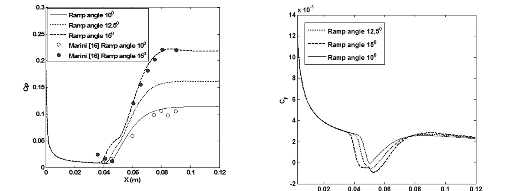
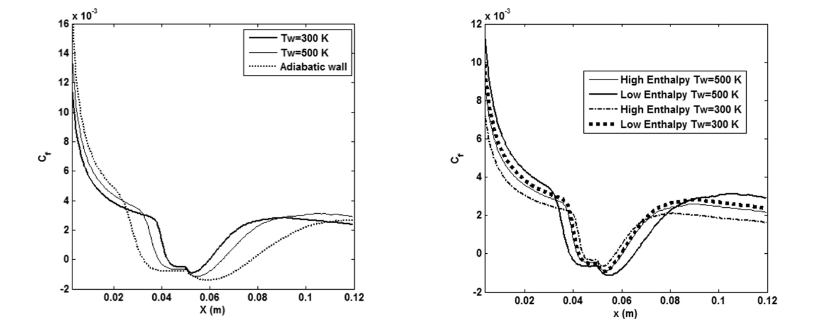
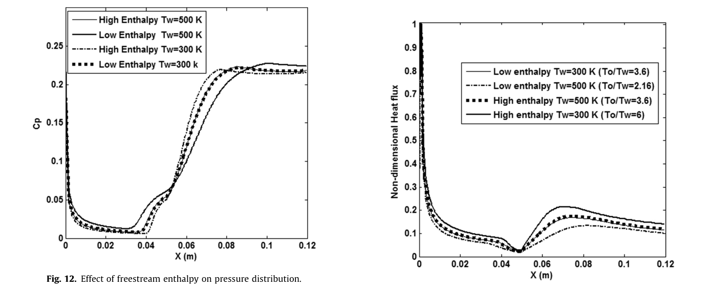
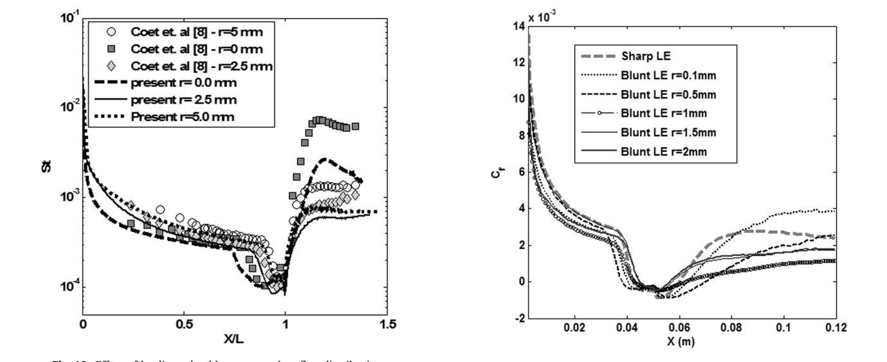

01中文摘要
用二维有限体积 CFD 求解器研究斜坡诱导激波与层流边界层的干扰及壁面参数变化。除压力外，重点分析表面热流、壁面摩阻和压力分布，以识别分离泡；考察来流与壁面参数及几何变化的影响。结果表明，壁温与来流滞止温度之比 Tw/T0 而非单个温度是控制 SWBLI 的参数；马赫数增大会抑制上游影响并缩小分离区；前缘钝化影响非单调，熵层稳定作用可减弱干扰。研究还用于验证关于湍流再附的实验观察。
02阅读说明
文章类型：数值模拟（层流高超声速压缩拐角 SWBLI 参数研究）。材料范围：bundle 共 606 行，已读至 EOF；正文 10 页（期刊 p.81-90）与 16 条抓图清单完整；另用 PDF p.1、p.3、p.6 核对式 (1)-(4)、Table 2 以及 Fig. 9/10 的图注与坐标。图表可读性：正文与 Table 2 清楚；公式文本层严重乱码，已按 PDF 原页复原；抓图清单缺少 Fig. 1（示意图）、Fig. 2（网格）、Fig. 3（收敛史）、Fig. 7（热流）、Fig. 15（Mach 对压力）、Fig. 17（马赫云图），因此这些图不能引用。信息完整度：中高——工况、分离泡长度、网格与验证均有定量数据；但没有实验不确定度，没有湍流/转捩模型，部分结论仅由少量工况支撑。提取口径：以正文明确数据与 Table 2 为主，AI 概括与推断逐条标注。 文章类型：期刊
03一句话核心与三句话摘要
M=5–10 层流压缩拐角计算表明：压力/热流只能定性判断分离，摩阻给出定量 Lb，T0/Tw 与钝化半径控制分离。
- 问题与缺口：高超声速 SWBLI 文献多以壁面压力定性判断分离，而高速设施中壁面摩阻难测；层流条件下 Mach 数、总温、壁温、斜坡角与前缘钝化半径对分离泡的定量影响仍不完整，极小钝化半径的作用尚未见公开报道。 原文明确
- 方法与工况：作者用自研二维有限体积层流 Navier–Stokes 求解器（AUSM、Barth–Jespersen/Venkatakrishnan、Sutherland、Pr=0.71），在 M=5–10、单位 Re=8×10^5–8.36×10^6 m^-1、斜坡 10–15°、Tw=300/500 K 或绝热、T0=1080/1800 K、前缘半径 0–5 mm 下计算 Cp、热流与 Cf，并以 Cf 过零点定义分离泡长度 Lb。 AI概括
- 结论：压力与热流只给出定性图像，Cf 才能定量给出 Lb；Lb 随斜坡角与壁温增大、随 Mach 数与总焓增大而减小；相同 T0/Tw 的工况几乎重合，提示 T0/Tw 是控制参数；极小钝化半径先使 Lb 增大、超过临界半径后减小；再附后热流被低估，指向可能存在湍流再附。 AI概括
04核心内容清单
| 要点 | 类型 | 重要性 | 原文依据 | 属性 |
|---|---|---|---|---|
| 采用自研二维有限体积层流 Navier–Stokes 求解器（USHAS）：AUSM 无黏通量、Barth–Jespersen/Venkatakrishnan 重构、Euler 显式、CFL=0.2–0.4、Sutherland 黏性、Pr=0.71；通过 Marini 与 Coet 实验验证。 | 数值方法 | A | PDF p.3，p.83；PDF p.4，p.84；PDF p.8，p.88 | 原文明确 |
| 网格无关性：180×60、180×90、240×120、360×180 四套网格，边界层内 15–35 点；以 300×150 网格 Cf 为参考，180×90 已基本网格无关且成本较低，全文采用。 | 网格/验证 | A | PDF p.3-4，p.83-84，Table 1，Figs. 3-5 | 原文明确 |
| 压力与热流只能定性判断分离：10°、12.5°、15° 压力分布中只有 15° 出现拐角上游近常压平台，热流由 V 形变为扩散 V/U 形；Cf 过零点才能给出 S、R 与 Lb。 | 测量判据 | A | PDF p.4-5，p.84-85，Figs. 6-8 | 原文明确 |
| 斜坡角：10° 无分离（Lb=0），15° Lb=17.75 mm；12.5° 计算给出 9.2 mm 分离，而 Needham–Stollery 关联式 θ_ins=13.5° 预测不分离，说明关联式只适用于 well-separated 流动。 | 斜坡角/初始分离 | A | PDF p.5，p.85，Table 2 | 原文明确 |
| 壁温：Tw=300 K、500 K、绝热壁对应 Lb=17.75、27、46.25 mm；上游影响随 Tw 增大，绝热壁最大；热流与 Cf 随 Tw 升高而下降，但更厚边界层使分离提前、再附后移。 | 壁温效应 | A | PDF p.5-7，p.85-87，Figs. 9-11，Table 2 | 原文明确 |
| 总焓：给定 Tw，T0 从 1080 升至 1800 K 使 Lb 由 17.75 降到 13.2 mm（Tw=300 K）、由 27 降到 18.2 mm（Tw=500 K）；相同 T0/Tw 的两种组合（1080/300 与 1800/500）压力、Cf、无量纲热流几乎重合。 | 总焓/相似性 | A | PDF p.6-7，p.86-87，Figs. 12-14，Table 2 | 原文明确 |
| T0/Tw 假设：作者由上述四组算例提出 T0/Tw 是 SWBLI 的最佳指示参数，优于单独的 T0 或 Tw；但自称 limited investigations，未做更宽参数检验。 | 相似参数 | A | PDF p.7，p.87 | 原文明确 |
| Mach 数：Re=8×10^5 m^-1、15° 下，M=5/6/7/8 对应 Lb=23/17.75/13.25/8.6 mm；提高 M 抑制上游影响、减小分离范围，M=8 已不属于 well-separated。 | Mach 数效应 | A | PDF p.7-8，p.87-88，Figs. 15-16，Table 2 | 原文明确 |
| 中等前缘钝化（M=10，复现 Coet 实验）：r=0/2.5/5 mm 对应 Lb=97.2/55.5/38.3 mm；钝前缘弓形激波后的熵层涡活动起稳定作用；钝前缘再附后峰值压力约为尖前缘的一半。 | 前缘钝化/熵层 | A | PDF p.8-9，p.88-89，Figs. 18-19，Table 2 | 原文明确 |
| 极小前缘钝化（M=6）：r=0.1/0.5/1/1.5/2 mm 对应 Lb=28.2/31.3/18.99/12.9/11.08 mm（尖前缘 17.75 mm），呈先增后减的非单调趋势，说明存在临界前缘半径 r_CR。 | 小钝化半径/临界半径 | A | PDF p.9，p.89，Fig. 20，Table 2 | 原文明确 |
| 湍流再附迹象：Stanton 数在再附后区域被系统性低估，尖前缘比钝前缘更明显，实验热流高于计算，说明再附后层流假设失效，可能为湍流甚至转捩再附。 | 再附/转捩 | A | PDF p.9，p.89，Fig. 19 | 原文明确 |
| 适用范围：二维、层流、理想气体、Sutherland、无湍流/转捩模型；T0/Tw 只由少量工况提出，r_CR 未定量，关联式只适用于 well-separated 流动。 | 局限 | B | PDF p.3，p.83；PDF p.5，p.85；PDF p.9，p.89 | AI概括 |
05引言：研究问题与领域缺口
【原文明确】作者从高超声速飞行器翼身结合、进气道、喷管、控制面等均会经历 SWBLI 出发，指出 SWBLI 可导致边界层分离、热载增大甚至湍流再附（PDF p.1，p.81）。层流分离取决于 Mach 数、Re、斜坡角、壁温与边界层稳定性；当偏转角超过初始分离角 θ_ins 时发生分离，分离点 S 位于压缩拐角上游，分离激波由分离过程诱导的压缩波汇合形成，S 与再附点 R 之间为分离泡（PDF p.1，p.81，Fig. 1）。小于 θ_ins 的斜坡也会在拐角前改变平板层流边界层，称为上游影响（PDF p.2，p.82）。【原文明确】已有研究缺口：只有少量结果注意到降低来流 Mach 数与总焓会恶化黏性-无黏干扰；高速设施中壁面剪应力难测，使压力/热流测量只能定性判断分离；小前缘钝化半径对 SWBLI 的影响尚未见公开文献（PDF p.2-3，p.82-83）。【原文明确】作者因此列出四个目标：理解 Mach 数与总温对上游影响、边界层分离及传热的影响；比较压力/热流定性预测与 Cf 定量结果，评论高速实验结论的有效性；数值验证初始分离关联式与钝前缘实验观察；研究极小前缘钝化半径对分离泡尺寸的影响（PDF p.3，p.83）。
06流动条件与几何构型
| 项目 | 数值/描述 | 依据 | 备注 |
|---|---|---|---|
| 几何与参考长度 | 0.05 m 前向平板 + 单斜坡压缩拐角；二维；Lref=0.05 m；斜坡角 θ 可变 | PDF p.3，p.83；PDF p.4，p.84 | Lref 定义为前平板长度；模型宽度与侧壁条件文中未提及 |
| 来流热力学与输运 | 理想气体；μ 按 Sutherland 定律；Pr=0.71 | PDF p.3，p.83 | 无真实气体效应模型 |
| 基准工况 | M∞=6；Re∞=8×10^5 m^-1；T0=1080 K；Tw=300 K；θ=15°；r=0 | PDF p.4-5，p.84-85 | 用于斜坡角、壁温、总焓、Mach 数与小钝化半径研究的共同基准，各节略有调整 |
| 斜坡角 10° | M∞=6；Re∞=8×10^5 m^-1；T0=1080 K；Tw=300 K；θ=10°；r=0 | PDF p.4，p.84；Table 2 | Lb=0 |
| 斜坡角 12.5° | M∞=6；Re∞=8×10^5 m^-1；T0=1080 K；Tw=300 K；θ=12.5°；r=0 | PDF p.4-5，p.84-85；Table 2 | Lb=9.2 mm；关联式给出的 θ_ins=13.5° |
| 斜坡角 15° | M∞=6；Re∞=8×10^5 m^-1；T0=1080 K；Tw=300 K；θ=15°；r=0 | PDF p.4-5，p.84-85；Table 2 | Lb=17.75 mm |
| 壁温 300 K（15° 斜坡） | M∞=6；Re∞=8×10^5 m^-1；T0=1080 K；Tw=300 K；θ=15°；r=0；等温壁 | PDF p.5，p.85；Table 2 | Lb=17.75 mm |
| 壁温 500 K（15° 斜坡） | M∞=6；Re∞=8×10^5 m^-1；T0=1080 K；Tw=500 K；θ=15°；r=0；等温壁 | PDF p.5，p.85；Table 2 | Lb=27 mm；分离点 x=0.03825 m |
| 绝热壁（15° 斜坡） | M∞=6；Re∞=8×10^5 m^-1；T0=1080 K；绝热壁；θ=15°；r=0 | PDF p.5，p.85；Table 2 | Lb=46.25 mm；最上游分离点 x=0.03225 m；壁面热流为零 |
| 总焓：高焓、低壁温 | M∞=6；Re∞=8×10^5 m^-1；T0=1800 K；Tw=300 K；θ=15°；r=0 | PDF p.6，p.86；Table 2 | Lb=13.2 mm；T0/Tw=6.0 |
| 总焓：低焓、高壁温 | M∞=6；Re∞=8×10^5 m^-1；T0=1080 K；Tw=500 K；θ=15°；r=0 | PDF p.6，p.86；Table 2 | Lb=27 mm；T0/Tw=2.16 |
| 总焓：高焓、高壁温 | M∞=6；Re∞=8×10^5 m^-1；T0=1800 K；Tw=500 K；θ=15°；r=0 | PDF p.6，p.86；Table 2 | Lb=18.2 mm；T0/Tw=3.6，与 1080/300 工况接近 |
| Mach 5（15° 斜坡） | M∞=5；Re∞=8×10^5 m^-1；T0=1080 K；Tw=300 K；θ=15°；r=0 | PDF p.7-8，p.87-88；Table 2 | Lb=23 mm |
| Mach 7（15° 斜坡） | M∞=7；Re∞=8×10^5 m^-1；T0=1080 K；Tw=300 K；θ=15°；r=0 | PDF p.7-8，p.87-88；Table 2 | Lb=13.25 mm |
| Mach 8（15° 斜坡） | M∞=8；Re∞=8×10^5 m^-1；T0=1080 K；Tw=300 K；θ=15°；r=0 | PDF p.7-8，p.87-88；Table 2 | Lb=8.6 mm；作者称该工况不能视为 well-separated |
| 前缘钝化研究 1：r=2.5 mm | M∞=10；Re∞=8.36×10^6 m^-1；T0=1100 K；Tw=300 K；θ=15°；r=2.5 mm | PDF p.8，p.88；Table 2 | 复现 Coet 等实验；Lb=55.5 mm；网格 480×90 |
| 前缘钝化研究 1：r=5.0 mm | M∞=10；Re∞=8.36×10^6 m^-1；T0=1100 K；Tw=300 K；θ=15°；r=5.0 mm | PDF p.8，p.88；Table 2 | Lb=38.3 mm；网格 470×90 |
| 前缘钝化研究 2：r=0.1 mm | M∞=6；Re∞=8×10^5 m^-1；T0=1080 K；Tw=300 K；θ=15°；r=0.1 mm | PDF p.9，p.89；Table 2 | Lb=28.2 mm；分离点上游移、再附点下游移 |
| 前缘钝化研究 2：r=0.5 mm | M∞=6；Re∞=8×10^5 m^-1；T0=1080 K；Tw=300 K；θ=15°；r=0.5 mm | PDF p.9，p.89；Table 2 | Lb=31.3 mm；增强分离最明显 |
| 前缘钝化研究 2：r=1.0 mm | M∞=6；Re∞=8×10^5 m^-1；T0=1080 K；Tw=300 K；θ=15°；r=1.0 mm | PDF p.9，p.89；Table 2 | Lb=18.99 mm；再附点进一步下游移，分离点几乎不变 |
| 前缘钝化研究 2：r=1.5 mm | M∞=6；Re∞=8×10^5 m^-1；T0=1080 K；Tw=300 K；θ=15°；r=1.5 mm | PDF p.9，p.89；Table 2 | Lb=12.9 mm |
| 前缘钝化研究 2：r=2.0 mm | M∞=6；Re∞=8×10^5 m^-1；T0=1080 K；Tw=300 K；θ=15°；r=2.0 mm | PDF p.9，p.89；Table 2 | Lb=11.08 mm；Lb 减小最明显 |
| 网格无关性算例 | 0.05 m 平板 + 15° 斜坡；M∞=6；Re∞=8×10^5 m^-1；四套网格 180×60、180×90、240×120、360×180；边界层内约 15、20、25、35 点；壁面最小间距 9×10^-5、5×10^-5、3×10^-5、1×10^-5 m | PDF p.4，p.84，Table 1 | 全场边界层厚度取 0.003 m；最终采用 180×90 |
| 参考 Cf 网格 | 300×150 网格的 Cf 作为百分比误差参考 | PDF p.4，p.84 | 用于 Fig. 4b 的 Cf 误差曲线；该网格未列入 Table 1 |
| 壁面热条件 | 等温壁或绝热壁；无滑移 | PDF p.3，p.83 | 绝热壁工况的壁面热流为零 |
| 时间推进 | Euler 显式；CFL=0.2–0.4 | PDF p.3，p.83 | 为保证数值稳定性 |
07核心现象与关键参数
| 参数 | 定义 | 数值 | 关系/说明 | 依据 |
|---|---|---|---|---|
| 分离泡长度 Lb | 分离点 S 与再附点 R 之间沿壁面的距离；S、R 由 Cf=0 的过零点确定 | 10°：0；12.5°：9.2 mm；15°：17.75 mm（M=6，Tw=300 K，T0=1080 K） | Lb 随斜坡角增大；12.5° 已出现分离，与 θ_ins=13.5° 的关联式矛盾 | PDF p.5，p.85；Table 2 |
| Lb 随壁温变化 | 15° 斜坡、M=6、Re=8×10^5 m^-1、T0=1080 K | Tw=300 K：17.75 mm；Tw=500 K：27 mm；绝热壁：46.25 mm | Tw 升高使边界层增厚、分离提前、再附后移，Lb 增大 | PDF p.5，p.85；Table 2 |
| Lb 随总焓变化 | 15° 斜坡、M=6、Re=8×10^5 m^-1，两种 T0 与两种 Tw | T0=1080/Tw=300：17.75 mm；T0=1800/Tw=300：13.2 mm；T0=1080/Tw=500：27 mm；T0=1800/Tw=500：18.2 mm | 给定 Tw 时 T0 升高使 Lb 减小；相同 T0/Tw 的工况 Lb 接近 | PDF p.6，p.86；Table 2 |
| Lb 随 Mach 数变化 | 15° 斜坡、Re=8×10^5 m^-1、Tw=300 K、T0=1080 K | M=5：23 mm；M=6：17.75 mm；M=7：13.25 mm；M=8：8.6 mm | M 升高使动能增大、上游影响受抑制，Lb 减小 | PDF p.7-8，p.87-88；Table 2 |
| Lb 随中等前缘钝化变化 | M=10、Re=8.36×10^6 m^-1、T0=1100 K、Tw=300 K、15° | r=0：97.2 mm；r=2.5 mm：55.5 mm；r=5 mm：38.3 mm | 中等钝化半径增大使 Lb 单调减小；熵层涡活动起稳定作用 | PDF p.8，p.88；Table 2 |
| Lb 随极小前缘钝化变化 | M=6、Re=8×10^5 m^-1、T0=1080 K、Tw=300 K、15° | r=0.1：28.2 mm；0.5：31.3 mm；1.0：18.99 mm；1.5：12.9 mm；2.0：11.08 mm；尖前缘 17.75 mm | 先随 r 增大而增大，超过 r_CR 后随 r 增大而减小 | PDF p.9，p.89；Table 2 |
| 总温-壁温比 T0/Tw | 来流总温与壁温之比；与 Tw/T0 互为倒数 | T0/Tw=3.6 对应 1080/300 与 1800/500 两种组合，Lb 分别为 17.75 与 18.2 mm；T0/Tw=6.0 对应 1800/300，Lb=13.2 mm；T0/Tw=2.16 对应 1080/500，Lb=27 mm | 作者假设 T0/Tw 是控制 SWBLI 的相似参数；摘要用 Tw/T0 表述，二者信息等价 | PDF p.6-7，p.86-87；摘要 p.81 |
| 初始分离角 θ_ins | Needham–Stollery 关联式给出的初始分离角；偏转角超过该值发生分离 | 本文基准工况 θ_ins=13.5° | M∞θ_ins=80√χ_L；θ_ins 随 M 增大而减小 | PDF p.1，p.81，式 (1)；PDF p.4，p.84 |
| 黏性干扰参数 χ_L | 平板-斜坡交接处的黏性干扰参数 | χ_L=M∞³√C/√Re_L；C=(μ_w/μ∞)(T∞/T_w) | 用于初始分离关联式；Re_L 的展开定义原文未在式旁给出，Nomenclature 仅给 Re_Lref=Re∞Lref | PDF p.1，p.81，式 (2)；PDF p.2，p.82 |
| 钝/尖前缘再附后峰值压力比 | 钝前缘斜坡再附后峰值压力与尖前缘对应值之比 | 约为 0.5（钝前缘约为尖前缘的一半） | 尖前缘分离激波更强，因而再附后峰值压力更高 | PDF p.8，p.88 |
| 无量纲热流 | 当地热流除以参考最大表面热流 | 定义见 PDF p.6，p.86；具体参考值文中未给出 | 用于比较总焓与壁温组合的影响 | PDF p.6，p.86；Figs. 12-14 |
| 上游影响 | 斜坡脚到最上游受影响位置的距离 | 文中只作定性描述（随 Tw 增大、随 M 与 T0 减小），未给出统一定义或数值表 | 与分离泡长度趋势一致，但未像 Lb 那样定量化 | PDF p.2，p.82；PDF p.5-8，p.85-88 |
| 网格分辨率 | 最终网格与边界层内点数 | 180×90；边界层内约 20 点；壁面最小间距 5×10^-5 m；前缘最小间距 5×10^-4 m；拐角最小间距 4×10^-4 m | 与 240×120、360×180 的 Cf 和 Lb 基本一致 | PDF p.4，p.84，Table 1 |
| Re_Lref | 以来流单位雷诺数与参考长度定义的雷诺数 | Re_Lref=Re∞Lref=ρ∞U∞Lref/μ∞；Lref=0.05 m，基准 Re∞=8×10^5 m^-1 | 用于无量纲化黏性项；按基准值计算约为 4×10^4（AI 计算，原文未直接给出） | PDF p.2，p.82；PDF p.3，p.83 |
08方法与数据
【原文明确】控制方程为二维可压缩 Navier–Stokes 的无量纲守恒形式（式 3-4，PDF p.3，p.83），采用自研 USHAS 求解器：单元中心有限体积、非结构数据、AUSM 无黏通量、Blazek 面梯度黏性通量、Barth–Jespersen 线性重构与 Venkatakrishnan 限制器、Euler 显式时间推进、CFL=0.2–0.4；理想气体、Sutherland 黏性、Pr=0.71；入口、出口、对称、等温或绝热黏性壁边界（PDF p.3，p.83）。【原文明确】网格无关性用 0.05 m 平板加 15° 斜坡、M=6、Re=8×10^5 m^-1 的 Marini 算例：180×60、180×90、240×120、360×180 四套网格，边界层内分别约 15、20、25、35 点，壁面最小间距 9×10^-5、5×10^-5、3×10^-5、1×10^-5 m；以 300×150 网格的 Cf 为参考比较百分比误差，最终选 180×90，因为 Cf 与 Lb 已基本不变且计算成本较低（PDF p.3-4，p.83-84，Table 1，Figs. 3-5）。【原文明确】验证：与 Marini 的 10°、15° 压力分布对比，并加算 12.5° 以检验 θ_ins=13.5° 的关联式预测；与 Coet 等 M=10、Re=8.36×10^6 m^-1、r=0/2.5/5 mm 的压力与 Stanton 数对比（PDF p.4，p.84；PDF p.8，p.88）。【原文明确】分离/再附点由 Cf=0 的位置判定，Lb=x_R−x_S；另用 Cp、热流（原文以参考最大表面热流无量纲化）与 Cf 分布描述 SWBLI（PDF p.5-6，p.85-86）。【AI概括】文中没有使用湍流模型或转捩模型；没有实验不确定度、没有系统网格误差分析；验证以分布形态对比为主，只有再附后热流偏差被明确讨论。
| 项目 | 内容 | 依据 | 备注 |
|---|---|---|---|
| 研究类型 | 二维层流 Navier–Stokes 数值模拟，参数研究 | PDF p.1，p.81；PDF p.3，p.83 | 无实验测量；与 Marini、Coet 实验对比验证 |
| 控制方程 | 二维可压缩 Navier–Stokes 无量纲守恒形式，式 (3)-(4) | PDF p.3，p.83 | 黏性应力与热传导项按式 (4) 下方公式 |
| 数值格式 | 单元中心有限体积；非结构数据；AUSM 无黏通量；Blazek 面梯度黏性通量；Barth–Jespersen 线性重构 + Venkatakrishnan 限制器；Euler 显式；CFL=0.2–0.4 | PDF p.3，p.83 | 自研 USHAS 求解器 |
| 热力学与输运 | 理想气体；Sutherland 黏性；Pr=0.71 | PDF p.3，p.83 | 无真实气体化学、无催化壁模型 |
| 边界条件 | 入口、出口、对称、无滑移等温壁或绝热壁 | PDF p.3，p.83 | 壁面热条件按工况切换 |
| 网格 | 180×60、180×90、240×120、360×180 四套；边界层内 15–35 点；最终 180×90 | PDF p.4，p.84，Table 1 | 前缘与拐角局部加密 |
| 网格无关性 | 以 300×150 网格 Cf 为参考计算百分比误差；比较 x=0.035 m 处 Cf 与 Lb；180×90 已基本不变 | PDF p.4，p.84，Figs. 4-5 | 仅在一个 15° 算例上系统验证 |
| 实验验证 1 | Marini 的 10°、15° 压力分布；另加 12.5° 检验 θ_ins=13.5° | PDF p.4，p.84，Fig. 6 | 压力分布吻合较好 |
| 实验验证 2 | Coet 等 M=10、Re=8.36×10^6 m^-1、r=0/2.5/5 mm 的压力与 Stanton 数 | PDF p.8-9，p.88-89，Figs. 18-19 | 压力吻合；再附后热流被低估 |
| 分离判据 | 壁面 Cf 过零点给出 S、R；Lb=x_R−x_S；同时给出 Cp、热流、Cf 分布 | PDF p.5，p.85 | 这是全文定量分析的核心判据 |
| 初始分离关联式 | Needham–Stollery：M∞θ_ins=80√χ_L；χ_L=M∞³√C/√Re_L | PDF p.1，p.81，式 (1)-(2) | 引用关联式，非本文推导；只适用于 well-separated 流动 |
| 不确定度/误差 | 无实验不确定度；无网格误差的系统量化；仅给出网格 Cf 百分比误差与验证分布对比 | PDF p.4，p.84；PDF p.8-9，p.88-89 | 文中未提及重复性、传感器误差或数值误差预算 |
09核心推导与公式
以二维可压缩 Navier–Stokes 无量纲守恒方程为起点，用有限体积法离散并推进到定常，得到壁面 Cp、热流与 Cf；再用 Cf 过零点定义分离泡长度 Lb，并用 Needham–Stollery 关联式判断初始分离。原文没有从方程解析推导 Lb，Lb 是数值解的后处理量。
关键假设
- 二维、层流、定常（时间推进至定常）
- 理想气体；Sutherland 黏性；Pr=0.71
- 物面无滑移，壁面等温或绝热
- 分离泡长度由壁面 Cf 过零点定义
- Needham–Stollery 关联式用于初始分离角判据
推导过程
以守恒变量 U、无黏通量 E_i/F_i、黏性通量 E_v/F_v 写出二维可压缩方程；这是全文所有计算的起点。
U 含密度、两个动量分量与总能量；E_i、F_i 为 x、y 方向无黏通量；E_v、F_v 为黏性通量，能量分量包含应力功与热传导。
牛顿流体本构关系给出正应力与剪应力；热传导按 Fourier 型梯度给出。原文该式在版面中以温度梯度乘以系数给出；符号约定受排版清晰度限制，未擅自改写。
理想气体；动力黏性由 Sutherland 定律计算；Prandtl 数取 0.71；参考雷诺数按来流密度、速度、参考长度与来流黏性定义。
单元中心有限体积、非结构面基算法；AUSM 计算无黏通量，Blazek 面梯度计算黏性通量；Barth–Jespersen 重构与 Venkatakrishnan 限制器提供高阶精度；Euler 显式推进，CFL 取 0.2–0.4。
偏转角大于 θ_ins 即发生分离；θ_ins 由 Needham–Stollery 关联式给出。数值上以壁面 Cf=0 的过零点给出 S、R，Lb=x_R−x_S。
适用边界：层流、二维、理想气体、Sutherland；无湍流/转捩模型；式 (1)-(2) 是引用关联式而非本文推导，且只适用于 well-separated 流动；网格无关性只在一个 15° 算例上系统验证；再附后热流被低估说明层流假设失效；T0/Tw 只由四个组合支撑；r_CR 未定量。
10结果：主要发现与关键证据
【原文明确】3.1 斜坡角（PDF p.4-5，p.84-85，Figs. 6-8）：M=6、Re=8×10^5 m^-1、Tw=300 K、T0=1080 K。10° 与 12.5° 的压力分布趋势相同，15° 在拐角上游出现一段近乎常压的平台，提示分离泡；热流在 10°/12.5° 呈典型 V 形，15° 在同一位置呈扩散 V 或 U 形；但压力/热流无法进一步给出分离信息，Cf 分布（Fig. 8）的过零点才给出 S、R。10° 无分离（Lb=0）；15° 的 Lb=17.75 mm；12.5° 竟给出 Lb=9.2 mm，而 Needham–Stollery 关联式预测 θ_ins=13.5°、应无分离。作者据此认为关联式只适用于压力分布有明显平台的 well-separated 流动，处于初始分离角附近时必须依靠数值研究揭示真实物理（PDF p.5，p.85）。【AI概括】这是全文对压力测量定性判据最直接的反例。
【原文明确】3.2 壁温（PDF p.5-7，p.85-87，Figs. 9-11，Table 2）：15° 斜坡，Tw=300 K、500 K 与绝热壁。上游影响随 Tw 增大，绝热壁最大。热流与 Cf 随 Tw 增大而整体下降，原因是壁温升高使黏性增大、水动力与热边界层增厚、近壁梯度减小；绝热壁热流为零，因而 Cf 最小。更厚的边界层更易分离：500 K 工况分离点在 x=0.03825 m，绝热壁最上游分离点在 x=0.03225 m；再附点随 Tw 向下游移动；Lb 从 300 K 的 17.75 mm 增至 500 K 的 27 mm 与绝热壁的 46.25 mm（PDF p.5，p.85）。
【原文明确】3.3 总焓（PDF p.6-7，p.86-87，Figs. 12-14，Table 2）：M=6、Re=8×10^5 m^-1，T0=1080 K（低焓）与 1800 K（高焓），Tw=300/500 K。给定 Tw，提高 T0 使上游影响与分离范围减小：Tw=300 K 时 Lb 由 17.75 mm 降到 13.2 mm；Tw=500 K 时由 27 mm 降到 18.2 mm。作者解释为总焓提高增加流体动能，使其对逆压梯度有更大抵抗。关键观察：低焓加低壁温（1080/300）与高焓加高壁温（1800/500）的无量纲热流、压力与 Cf 分布几乎相同，两者 T0/Tw 均为 3.6（Tw/T0=0.278）。作者因此假设 T0/Tw 是比单独 T0 或 Tw 更有意义的 SWBLI 比较参数（PDF p.6-7，p.86-87）。【AI推断】该假设只由四个组合、两个比值支撑，作者自称 limited investigations。
【原文明确】3.4 Mach 数（PDF p.7-8，p.87-88，Figs. 15-16，Table 2）：M=5、6、7、8，Re=8×10^5 m^-1，T∞=131.7 K，Tw=300 K，15°。θ_ins 随 M 增大而减小，但 15° 对最低 M 仍足够大；压力平台与 Cf 均显示分离。Lb：M=5 为 23 mm、M=6 为 17.75 mm、M=7 为 13.25 mm、M=8 为 8.6 mm；M=8 已不能视为 well-separated。作者归因于相同内能下更高 M 对应更高动能，分离泡因而更小（PDF p.7-8，p.87-88）。
【原文明确】3.5 前缘钝化（PDF p.8-9，p.88-89，Figs. 17-20，Table 2）：（a）复现 Coet 等 M=10、Re=8.36×10^6 m^-1、T0=1100 K、Tw=300 K、15°、r=0/2.5/5 mm：Lb=97.2/55.5/38.3 mm；钝前缘为脱体弓形激波，尖前缘为附着斜激波；弓形激波后的熵梯度在边界层外产生强涡活动，起稳定作用，抵消 Mach 数降低带来的失稳；钝前缘再附后峰值压力约为尖前缘的一半，因为尖前缘分离激波更强；Stanton 数除再附后区域外与实验吻合，计算在再附后低估热流，尖前缘更明显，指向层流假设失效与可能的湍流再附（PDF p.8-9，p.88-89）。（b）M=6、Re=8×10^5 m^-1、15°、r=0.1/0.5/1/1.5/2 mm：Lb=28.2/31.3/18.99/12.9/11.08 mm（尖前缘 17.75 mm）。r=0.1 mm 使分离点上游移、再附点下游移；0.5 mm 增强更明显；r=1 mm 再附点进一步下游移而分离点几乎不变；r≥1.5 mm 分离点下游移、再附点上游移，Lb 减小。作者据此提出临界前缘半径 r_CR：极小半径先增强分离，中等半径后减小分离（PDF p.9，p.89，Table 2）。
| 发现 | 证据 | 证据类型 | 强度 | 位置 | 属性 |
|---|---|---|---|---|---|
| 压力与热流测量只能定性判断分离，壁面 Cf 才能定量给出分离/再附位置与 Lb。 | 10°、12.5°、15° 的压力与热流分布只能区分 15° 的近常压平台；Cf 过零点给出 12.5° 的 9.2 mm 分离泡（PDF p.5，p.85，Figs. 6-8） | 测量判据 | 强 | PDF p.4-5，p.84-85，Figs. 6-8 | 原文明确 |
| Needham–Stollery 初始分离关联式只在 well-separated 流动中可靠；12.5° 低于其 θ_ins=13.5° 却出现 9.2 mm 分离。 | 数值 Cf 分布与 Table 2 的 Lb=9.2 mm；作者明确称关联式只应用于压力有明显平台的工况（PDF p.5，p.85） | 初始分离判据 | 强 | PDF p.5，p.85；Table 2 | 原文明确 |
| 壁温升高使分离提前、再附后移、Lb 显著增大；绝热壁的 Lb 最大（46.25 mm）。 | Tw=300/500 K/绝热的 Lb=17.75/27/46.25 mm；500 K 分离点 x=0.03825 m，绝热壁 x=0.03225 m（Table 2，Fig. 11） | 壁温效应 | 强 | PDF p.5，p.85；Table 2，Fig. 11 | 原文明确 |
| 相同 T0/Tw 的不同总温/壁温组合给出几乎相同的压力、Cf 与无量纲热流，提示 T0/Tw 是控制参数。 | 1080/300 与 1800/500 的 T0/Tw 均为 3.6，Lb 分别为 17.75 与 18.2 mm，分布几乎重合（PDF p.6-7，p.86-87，Figs. 12-14） | 相似性 | 中 | PDF p.6-7，p.86-87；Table 2 | 原文明确 |
| 提高 Mach 数抑制上游影响并减小分离范围：M=5 到 8，Lb 由 23 mm 降到 8.6 mm。 | Table 2 的 M=5/6/7/8 对应 Lb=23/17.75/13.25/8.6 mm；Fig. 16 的 Cf 分布（PDF p.7-8，p.87-88） | Mach 数效应 | 强 | PDF p.7-8，p.87-88；Table 2，Fig. 16 | 原文明确 |
| 极小前缘钝化半径先增强分离、超过临界半径后减弱分离，Lb 呈非单调变化。 | M=6 下 r=0.1/0.5/1/1.5/2 mm 的 Lb=28.2/31.3/18.99/12.9/11.08 mm（尖前缘 17.75 mm）；r=0.5 mm 最强，r≥1 mm 后下降（Fig. 20，Table 2） | 前缘钝化 | 强 | PDF p.9，p.89；Fig. 20，Table 2 | 原文明确 |
| 中等前缘钝化（M=10）使 Lb 从 97.2 mm 降到 38.3 mm，钝前缘再附后峰值压力约为尖前缘的一半，熵层涡活动起稳定作用。 | r=0/2.5/5 mm 的 Lb=97.2/55.5/38.3 mm；压力峰值比约 0.5（PDF p.8-9，p.88-89，Figs. 18-19） | 前缘钝化/熵层 | 强 | PDF p.8-9，p.88-89；Figs. 18-19 | 原文明确 |
| 再附后 Stanton 数被低估，尖前缘比钝前缘更明显，说明层流假设在再附后失效，可能存在湍流再附。 | 计算与 Coet 实验的 Stanton 数对比：再附后区域系统性偏低，实验热流更高（PDF p.9，p.89，Fig. 19） | 再附/转捩 | 中 | PDF p.9，p.89，Fig. 19 | 原文明确 |
| 数值方法经 Marini 压力分布与 Coet 压力/热流验证，180×90 网格在本算例上已基本网格无关。 | Fig. 6 压力分布吻合；Fig. 5 的 Cf 与 Lb 随网格变化很小；Fig. 4b 的 Cf 误差随网格加密下降（PDF p.4，p.84） | 验证 | 中 | PDF p.4，p.84，Figs. 4-6 | 原文明确 |
11机制解释与论证链
【原文明确】机制链为：斜坡造成的逆压梯度使边界层增厚并分离，分离过程诱导的压缩波汇合成分离激波，S 与 R 之间形成回流区（PDF p.1，p.81）。壁温升高使黏性增大、水动力与热边界层增厚，近壁速度/温度梯度减小，因此热流与 Cf 下降；但更厚的边界层更难承受逆压梯度，分离提前、再附后移、Lb 增大（PDF p.5，p.85）。提高总焓增加流体动能，使其对逆压梯度有更大抵抗，因而上游影响与 Lb 减小；相同 T0/Tw 时边界层内温度分布相似，压力、Cf 与无量纲热流几乎重合（PDF p.6-7，p.86-87）。提高 Mach 数在相同内能下增加动能，同样抑制上游影响、减小分离（PDF p.7-8，p.87-88）。前缘钝化产生脱体弓形激波与熵层：中等半径下，熵梯度在边界层外造成强涡活动，起稳定作用，抵消 Mach 数降低带来的失稳，故 Lb 随 r 增大而减小（PDF p.8，p.88）；极小半径下，薄浸没熵层反而使分离泡加宽，超过 r_CR 后厚熵层使分离泡收缩（PDF p.9，p.89）。【AI推断】再附后热流被低估的机制被作者归因于层流假设失效与可能的湍流再附，但文中没有转捩模型或脉动测量来证实。
12讨论：结论、贡献与局限
【原文明确】机制链：逆压梯度使边界层增厚并分离，分离过程诱导分离激波；Tw 通过黏性与边界层厚度影响近壁梯度与分离倾向；T0 与 M 通过动能增强抵抗逆压梯度；钝化通过弓形激波与熵层涡活动稳定边界层，但极小半径的薄浸没熵层反而使分离泡加宽（PDF p.5-9，p.85-89）。【AI概括】作者的核心方法论主张是：压力与热流测量只能给出定性分离图像，Cf（或高分辨率计算）才能给出 Lb 与上游影响的定量估计；这也是他们对实验文献的主要批评。【原文明确】作者承认研究有限：层流假设在再附后不成立，再附性质（湍流或转捩）未确定，r_CR 未定量，T0/Tw 只是假设，关联式只适用于 well-separated 流动（PDF p.5，p.85；PDF p.9，p.89）。【AI推断】理想气体加 Sutherland 在 T0=1800 K 的高焓工况下是否足够、二维假设对有限宽模型的影响，文中未讨论。
作者结论
【原文明确】作者总结：在高超声速层流斜坡诱导 SWBLI 中，压力与热流测量只能给出分离与再附的定性图像，而壁面剪应力分布可给出分离泡长度与上游影响的定量估计；初始分离关联式只在 well-separated 流动中有效。Lb 随斜坡角与壁温增大，随 Mach 数与来流总焓增大而减小。有限证据表明 T0/Tw 比单独的总温或壁温更适合作为 SWBLI 的比较参数。前缘钝化结果表明流动只在分离点之前保持层流，支持实验关于可能存在湍流再附的观察；分离泡长度与前缘半径强相关，极小半径先增大分离、超过临界半径后减小，说明存在临界前缘半径，值得进一步研究（PDF p.9，p.89）。【AI概括】本文的贡献不是给出新的解析模型，而是用高分辨率层流计算把“压力/热流定性、Cf 定量”的方法论主张、T0/Tw 相似假设与钝化半径非单调效应结合起来，为后续实验与湍流计算提出可检验的问题。
主要贡献
- 建立并验证了二维非结构有限体积层流高超声速求解器（USHAS），给出完整的控制方程、通量格式、边界条件与网格无关性流程。
- 用 Cf 过零点定量给出 Lb，明确指出压力与热流测量只能定性判断分离，挑战了仅凭压力平台判断初始分离的实验惯例。
- 发现 12.5° 斜坡在关联式预测不分离时仍出现 9.2 mm 分离泡，并据此把 Needham–Stollery 关联式的适用范围限定为 well-separated 流动。
- 系统给出斜坡角、壁温、总焓与 Mach 数对 Lb 的定量影响，形成可直接比较的工况表（Table 2）。
- 提出 T0/Tw 作为 SWBLI 相似参数的假设，并给出相同 T0/Tw 下压力、Cf、无量纲热流几乎重合的证据。
- 首次系统计算极小前缘钝化半径（0.1–2 mm）对层流分离泡的影响，揭示先增后减的非单调趋势与临界半径的存在。
- 通过再附后热流低估与尖前缘更明显的偏差，把层流计算与实验的差异明确归因于可能的湍流再附。
局限与未解决问题
【作者承认】研究是 limited investigations：层流假设在再附后不成立；再附是湍流还是转捩未确定；T0/Tw 只是假设；r_CR 未定量；初始分离关联式只适用于 well-separated 流动；网格无关性只在一个算例上验证（PDF p.5，p.85；PDF p.9，p.89）。【AI识别】二维、理想气体、Sutherland 黏性，无真实气体化学、无催化壁、无湍流/转捩模型；T0=1800 K 下理想气体假设的适用性未讨论；没有实验或数值不确定度预算；前缘钝化研究 1 只有三个半径，无法精确确定 r_CR；上游影响只有定性描述；Table 2 的工况数量有限，T0/Tw 假设只由两个相同比值支撑；抓图清单缺少 Fig. 1、2、3、7、15、17，部分图件无法复核。
13对高速流动与工程的意义
【AI概括】对高超声速进气道、隔离器、压缩面与控制面设计有直接启示：层流 SWBLI 中压力与热流测量可能严重低估分离范围，必须借助 Cf 或高分辨率 CFD 才能定量分离泡；T0/Tw 若成立，可把地面风洞的不同总温/壁温条件归一到同一相似参数，简化实验外推；壁温升高会显著增大分离泡，热防护设计不能只看热流下降；极小前缘钝化可能反而恶化分离，存在临界半径，钝化设计需避开该区间；再附后热流被层流计算低估，说明基于层流 CFD 的热载预测在再附区偏危险。可借鉴的方法包括 Cf 过零点判据、Table 2 式工况矩阵、网格无关性与 Marini/Coet 验证链。本文不能回答：湍流/转捩再附的定量热流、真实气体与催化效应、三维有限宽模型效应、r_CR 的定量标度、T0/Tw 在更宽参数范围的普适性。
14核心图件




15可引用原文素材
| 原文短句 | 可支持的观点 | 位置 | 使用建议 |
|---|---|---|---|
| “Pressure measurements are invariantly considered in the literature for qualitative prediction” | 压力测量在文献中只被用于定性预测 | PDF p.1（p.81），摘要 | 全文方法论批评的起点 |
| “ratio of wall temperature to freestream stagnation temperature is the governing parameter” | Tw/T0（即 T0/Tw）是控制参数 | PDF p.1（p.81），摘要 | 支撑相似参数假设 |
| “the correlation must be alluded to only for cases that are well-separated” | 初始分离关联式只适用于 well-separated 流动 | PDF p.5（p.85） | 解释 12.5° 的反例 |
| “Increase in Mach number is found to suppress the upstream influence” | 提高 Mach 数抑制上游影响 | PDF p.1（p.81），摘要 | Mach 数效应的总结 |
| “the adiabatic wall boundary condition has the largest upstream influence” | 绝热壁的上游影响最大 | PDF p.5（p.85） | 壁温效应的关键证据 |
| “nearly half of its value as compared to a sharp leading edge ramp” | 钝前缘再附后峰值压力约为尖前缘的一半 | PDF p.8（p.88） | 说明分离激波强度差异 |
| “small leading edge bluntness as well alters the flowfield significantly” | 极小前缘钝化也显著改变流场 | PDF p.9（p.89） | 引出临界前缘半径 |
| “the assumption of laminar flow in the computations is not valid in the post-reattachment regions” | 再附后层流假设失效 | PDF p.9（p.89） | 解释热流低估与湍流再附 |
16最终核验
| 核验项 | 结论 |
|---|---|
| 仅基于全文 | 是。仅使用 bundle 的正文、Table 2、图注与抓图清单，并用 PDF 原页 p.1、p.3、p.6 核对式 (1)-(4)、Table 2、Fig. 9/10；未引入外部知识或文献结论。 |
| A 级要点有依据 | A 级要点均有页码/节/图/表/公式支撑；网格参数来自 Table 1；Lb 数值来自 Table 2；式 (1)-(4) 已按 PDF 原页核对；12.5° 反例、Tw/T0 相似、Mach 趋势、钝化非单调均有正文与表/图依据。 |
| 属性标注 | 三句话、core_points、findings 均标属性；直接陈述标“原文明确”，跨节归纳与工程含义标“AI概括”，机制推断标“AI推断”。 |
| 覆盖范围 | bundle 606 行已读至 EOF，覆盖期刊 p.81-90 全文与 16 条抓图清单；另读 PDF 4 页（p.1-3 与 p.6），未超过 6 页限制；缺失图件（Fig. 1、2、3、7、15、17）未引用。 |
| 无编造 | 未编造页码、图号、公式或数据；Table 2 的 Lb、T0、Tw、r 均逐行抄录；式 (1)-(4) 按 PDF 复原；无法确认处写“文中未提及”或“受限于材料”；摘要的 Tw/T0 与正文 T0/Tw 已注明互为倒数，不视为矛盾。 |
需回原文确认
- 12.5° 斜坡低于关联式 θ_ins=13.5° 却出现 9.2 mm 分离：是关联式只适用于 well-separated 流动，还是二维层流计算/网格/来流条件导致？
- T0/Tw 是否真正是控制参数？目前只有 1080/300、1800/300、1080/500、1800/500 四个组合，其中相同比值只有两组，缺乏更宽 T0、Tw 与 M 的检验。
- 临界前缘半径 r_CR 在 M=6 下约为 0.5–1 mm，但未定量；它如何随 M、Re、Tw 与斜坡角变化？
- 极小钝化半径增强分离的机制（薄浸没熵层）与中等半径减弱分离的机制（厚熵层涡活动）如何定量区分？
- 再附究竟是湍流、转捩还是层流非定常？文中没有转捩模型、脉动测量或壁面热流高频数据。
- T0=1800 K 下理想气体与 Sutherland 假设是否仍然适用？真实气体效应会如何改变 T0/Tw 相似性？
- 网格无关性只在一个 15°、M=6 算例上验证；其他 Mach、钝化半径与绝热壁工况的网格误差是否同样小？
- 上游影响只有定性描述，能否从 Cf 或压力分布中提取统一定义并与 Lb 建立定量关系？
17关联文献
依据标签、板块、构型与作者脉络自动关联，可据此追踪同一问题的前序与后续工作。
18引用格式
选择期刊风格后复制；出处保留原刊名。BibTeX 可直接用于 LaTeX。
引用格式
John, B., Kulkarni, V. N. & Natarajan, G. 2014 Shock wave boundary layer interactions in hypersonic flows. International Journal of Heat and Mass Transfer. https://doi.org/10.1016/j.ijheatmasstransfer.2013.10.072
PDF上传 PDF 并更新本页
本页缺少全文、摘要或图件时，可在浏览器本地补入 PDF。解析完全在本机完成，不上传网络；完成后会更新本页的 PDF 打开链接、原摘要、IMRaD 机器抽取、关键句与含图页面。复杂的公式语义与中文深度解读仍以原文和既有精读记录为准。
Zotero 笔记摘录
斜坡角 θ ：θ 增大，分离泡长度增大；10° 不分离，12.5° 约 9.2 mm，15° 约 17.75 mm。 壁温 Tw ：Tw 增大，分离泡增大；15° 时 300 K 为 17.75 mm，500 K 为 27 mm，绝热壁为 46.25 mm。作者提出 Tw/T0 比单独 Tw 或 T0 更适合作为 SWBLI 控制参数。 Mach 数 ：Ma 增大，上游影响和分离尺度减小；15° 时 M5 约 23 mm、M6 17.75 mm、M7 13.25 mm，M8 已不算“well-separated”。 总焓/总温 T0 ：T0 增大，分离泡减小；300 K 壁温下低焓 17.75 mm，高焓 13.2 mm。 Re ：固定，未系统研究。 前缘钝化 ：非单调；很小钝化先增强分离，中等钝化后熵层稳定效应使分离减小，存在临界前缘半径。 三维/真实气体 ：二维；理想气体，未考虑化学真实气体。